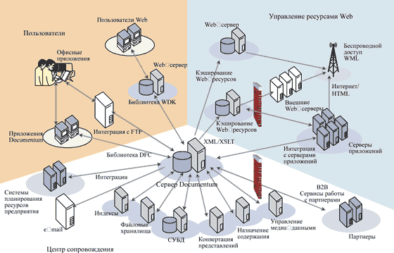
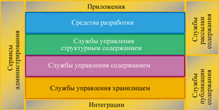
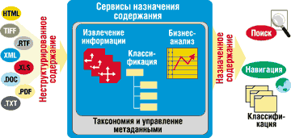
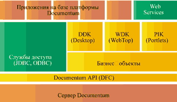
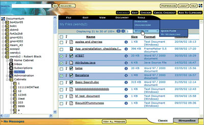

Алексей Николаев,
менеджер по консалтингу "Документум Сервисиз"
Появление в свое время системы управления корпоративным контентом Documentum 4i (см. "Documentum: управления документами к поддержке электронного бизнеса", "BYTE/Россия" № 5'2001) открыло много новых функциональных возможностей, но при этом создало для пользователей предыдущей версии EDMS98 серьезные проблемы при миграции. Фактически для перехода на новую версию требовалась радикальная переработка прикладных решений, а программистам нужно было осваивать новую архитектуру (библиотеки, интерфейсы и т. п.). Поэтому многие клиенты с тревогой ожидали выхода очередной, пятой версии продукта.
Однако разработчики системы заранее объявили, что в Documentum 5 не будет ни одного архитектурного изменения - основные усилия при создании новой версии будут направлены на исправление ошибок, повышение производительности и добавление новых функций. Пользователи смогли убедиться в этом после официального выхода новой версии осенью 2002 г. Учитывая характер различий между версиями, в данной статье мы кратко рассмотрим основное предназначение платформы Documentum 5 и остановимся более подробно на тех новых функциях, которые появились совсем недавно.
Архитектура платформы
Практически на любом предприятии в производственном процессе задействуется множество различных типов корпоративных данных (содержания, или контента). Это могут быть документы, книги, чертежи, Web-ресурсы, видео- и аудиоклипы, изображения, каталоги, отчеты, электронные формы и т. д. Возможность создавать такие данные, идентифицировать и классифицировать их, управлять ими и передавать их нужным получателям очень важна для работы корпоративной информационной среды.
Чтобы лучше понять, как организована платформа Documentum 5 и какое место она занимает в глобальной информационной системе предприятия, рассмотрим ее архитектуру и основные задачи, которые она должна решать (рис. 1). Как правило, в системе управления корпоративным контентом с одними и теми же данными работают многие сотрудники, заказчики и партнеры предприятия. Сотрудники могут создавать данные в офисных приложениях, скажем, Microsoft Word, и им необходима возможность принимать управленческие решения в среде привычных инструментов, имея прозрачный доступ к общему информационному окружению. Кроме того, предприятия все чаще возлагают ответственность за создание данных на своих партнеров и заказчиков - соответственно идет постепенная интеграция информационных сред разных предприятий.
|  |
| Рис. 1. Архитектура Documentum 5 и ее роль в информационной системе предприятия.
|
Архитектура Documentum базируется на едином доступе к хранилищу информации. Система поддерживает множество корпоративных стандартов, в том числе XML, Web Services, WebDAV, EJB, JDBC, JMS, JCA, спецификации Microsoft (.NET, OLE DB, C#, ASP+, VB Control, Microsoft Office, Explorer), а также W3C, OASIS, XSLT, ebXML, HTML,WAP, DOM, SAX2, DTD, ODMA, ODBC, WfMC и WSRP. Благодаря этому ее легко интегрировать в инфраструктуру современного предприятия, обеспечив взаимодействие с другими информационными подсистемами. Для разработки приложений на основе Documentum можно применять различные инструменты, а интеграцию с другими системами можно провести, не разрабатывая дополнительных модулей.
Технически платформа реализована в виде наборов служб и средств, отвечающих за различные функции и задачи (рис. 2).
|  | Рис. 2. Структура служб и средств Documentum 5.
|
Службы управления хранилищем и содержанием
Предоставляемые сервером Documentum службы управления хранилищем можно назвать сердцем информационной среды. Они включают полный набор функций для управления данными и производственными процессами.
Для создания структуры информационной среды сервер Documentum предлагает объектно-ориентированную модель хранилища данных (рис. 3), которая позволяет адаптировать информационную среду в соответствии с уникальными требованиями предприятия. Пользователь может создавать типовые объектные модели, пригодные для многократного использования и расширяемые. Все это не только упрощает адаптацию, но и позволяет ускорить цикл внедрения информационной среды.
В состав служб управления хранилищем содержания входят также функции управления взаимосвязями между объектами, авторизации, контроля над действиями, уведомления о событиях, поиска, контроля над версиями. Кроме того, имеющиеся функции обеспечивают поддержку серверов транзакций, таблиц уровней доступа (ACL) и ролей (Aliases), создание представлений и управление ими, сервисы аннотирования, управление технологическими процессами (workflow) и жизненными циклами, работу с XML-компонентами, репликацию, "предобразование" контента и т. д.
Отдельно стоит отметить появление в Documentum 5 специализированных служб защиты информации (шифрование, универсальная авторизация, цифровая подпись, антивирусные средства), обеспечивающих безопасность на уровне современных требований и стандартов.
Функции управления XML-компонентами обеспечивают прозрачное импортирование и экспортирование XML-контента, что упрощает интеграцию со многими системами и приложениями. Библиотеки Documentum API позволяют проводить фрагментацию и дефрагментацию XML-документов, создавать XML-приложения, к которым можно привязывать правила верификации и обработки. При необходимости результат запроса к серверу Documentum может быть динамически выдан в формате XML. Предусмотрена возможность интеграции со средствами разработки XML-документов, такими, как SoftQuad Xmetal и ArborText epic.
Современному предприятию очень важна возможность извлечения и сборки данных из внешних источников, таких как Web-серверы, файловые серверы, СУБД, ERP-системы. Для таких целей Documentum 5 предлагает специализированный механизм Content Aggregation Services (службы сбора контента), который позволяет сканировать внешние хранилища информации, извлекать необходимые данные по заданным параметрам и сохранять их в хранилище Documentum для дальнейшей классификации и обработки (рис. 3).
|  | Рис. 3. Функции сбора содержания.
|
Расширение функционала коснулось и механизма маршрутизации документов. Служба управления межкорпоративными процессами документооборота (Inter-enterprise Workflow, IWS) позволяет организации распространять свои внутренние процессы Workflow на внешних контрагентов и заказчиков. Таким образом, например, можно автоматизировать процесс обработки заявок от клиентов - заявка будет отсылаться на определенный адрес электронной почты, после чего внутри компании будет инициироваться процесс обработки этой заявки.
Управление мультимедийными данными
Сегодня деятельность предприятий нередко требует хранения цифровой мультимедийной информации и управления ею. Любая мультимедийная информация (видео- и аудиофайлы, изображения и т. д.), принимающая участие в производственном процессе, взаимосвязана с другими типами контента (документами, формами, записями). Специализированные службы Documentum Digital Asset Management обеспечивают целостность данных и автоматизацию всех этапов работы с ними, позволяя формировать единую информационную среду, предусматривающую управление не только классическими типами корпоративного контента, но и цифровой мультимедийной информацией. Перечислим основные функции Digital Asset Management.
Обработка аудио- и видеоизображений на серверном уровне. Используя заранее определенные шаблоны, обычные пользователи, не владеющие инструментами обработки изображений, такими, как Photoshop, могут выполнять операции над хранимыми данными в среде привычных рабочих приложений.
Управление пиктограммами. При просмотре больших массивов мультимедийной информации и офисных документов система позволяет применять для навигации пиктограммы. По виду этих пиктограмм нетрудно определить содержание соответствующего документа, изображения или видеофильма.
Управление мультимедийными потоками. Специализированный сервер, входящий в состав данной версии, позволяет хранить и публиковать динамические ссылки на потоковые цифровые данные.
Управление маркетинговой информацией. Специализированные библиотеки, входящие в состав Documentum, упрощают процессы создания таких документов, как презентации PowerPoint.
Средства интеграции
Documentum 5 предоставляет обширный набор служб интеграции, с помощью которых пользователи могут разрабатывать документы в привычных для них приложениях, сохраняя их непосредственно в корпоративном хранилище. Благодаря поддержке стандартов ODMA и WebDAV можно интегрировать практически любые современные средства создания контента, включая Microsoft Office, Photoshop, AutoCAD, "Компас", Visio, CorelDRAW, средства разработки Web-ресурсов и т. д.
Использование спецификаций FTP и ODBC/JDBC в сочетании с поддержкой систем сканирования и ввода документов (Kofax, Captiva, FineReader и т. д.) позволяет автоматизировать процессы, связанные с обработкой входящих электронных и бумажных документов из внешних источников.
Отдельно стоит отметить предлагаемые компанией Documentum готовые модули интеграции с различными корпоративными информационными системами и портальными решениями, например, ATG Dynamo, BEA WebLogic Application Server, IBM WebSphere, Lotus Notes, SAP R/3, Siebel eBusiness Applications, Virage Video Logger.
Средства разработки
Предлагая пользователям инструментарий для разработки приложений на базе своей платформы, компания Documentum по-прежнему стремится обеспечить поддержку всех основных программных интерфейсов, облегчить унификацию разработок (рис. 4).
|  | Рис. 4. Documentum 5 унифицирует среду для разработки приложений.
|
Фундаментом здесь также служит сервер Documentum, который обеспечивает все необходимые функции управления хранилищем контента, включая мультимедийные и структурные данные. Специализированное пользовательское приложение Documentum Application Builder позволяет визуально настраивать все параметры хранилища Documentum, в том числе расширять объектно-ориентированную модель данных, создавать процессы документооборота, жизненные циклы, роли, пользователей, таблицы прав доступа, словари данных, сервисные методы и т. д. Это основной интерфейс разработчика приложений Documentum.
Следующий уровень составляет библиотека Documentum Foundation Classes (DFC) API - объектно-ориентированный набор классов и функций, на основе которых строятся любые приложения или модули Documentum. Ядро DFC API базируется на технологии Java и имеет открытый доступ к COM-интерфейсу. Таким образом, любые приложения, способные работать через интерфейсы COM и Java, могут получать доступ ко всем функциям Documentum. В результате специалисты, разрабатывающие клиент-серверные приложения или Web-приложения на основе J2EE или .NET, избавляются от необходимости изучать разные библиотеки API.
Следующий структурный уровень, находящийся над DFC API, разделяется на две составляющие - стандартные интерфейсы служб доступа ODBC и JDBC и "бизнес-объекты". Стандартные интерфейсы могут применяться во множестве Web-приложений и клиент-серверных разработок, они обеспечат доступ к функциям Documentum без дополнительных программных настроек. Например, с помощью ODBC можно создавать отчеты в Microsoft Access и Excel или Crystal Reports.
"Бизнес-объекты" и наборы стандартных компонентов (DDK, WDK, PIK) могут служить для быстрого построения собственных приложений Documentum. Обратим внимание на новый уровень абстракции программной логики, представленный "бизнес-объектами". Основная цель введения данного уровня - позволить разработчикам писать программный код один раз, но иметь возможность вызывать его из любых типов приложений (J2EE, COM, .NET). Уровень "бизнес-объектов" позволяет расширять программную модель DFC API, благодаря чему любой разработчик может создать свой собственный класс DFC или расширить состав функций уже существующего класса, добавив туда новую программную логику. Библиотека DFC имеет интерфейсы ко всем типам приложений, поэтому, написав однажды класс или функцию, ее можно затем вызывать как из Web-приложений, так и из клиент-серверных систем.
Еще одна особенность "бизнес-объектов" заключается в возможности модифицировать стандартные функции DFC API. Например, можно взять функцию, которая отвечает за сохранение нового документа в хранилище, и дописать к ней собственный программный код, который будет создавать в структуре архива папки, соответствующие данному документу. Это существенно расширяет возможности настройки и адаптации приложений Documentum без модификации их программного кода.
На основе библиотеки DFC и "бизнес-объектов" компания Documentum разработала целый набор готовых компонентов, которые могут быть использованы при создании пользовательских приложений. Эти компоненты реализуют всю основную функциональность, необходимую пользователям при работе с хранилищем, включая функции просмотра, редактирования, поиска, работы с задачами и т. д. На их основе строятся все стандартные приложения Documentum (Desktop Client, Webtop, WebPublisher и т. д.), что также упрощает их настройку и адаптацию.
Компоненты делятся на три основных типа:
- DDK - набор COM-компонентов для построения клиент-серверных приложений;
- WDK - более 210 компонентов для построения приложений J2EE и .NET;
- PIK - набор JSP-компонентов, которые могут быть встроены в различные корпоративные порталы таких производителей, как BEA, ATG, IBM и Oracle.
Последний уровень иерархии средств разработки - пользовательские приложения, которые могут задействовать интерфейсы служб доступа, функции DFC, "бизнес-объекты" или готовые модули. В системе также имеется поддержка служб Web Services - с ее помощью любые типы приложений могут получать доступ к программным функциям через протокол HTTP.
Пользовательские приложения
Пользователи могут создавать собственные приложения на основе DFC, но в состав продуктов Documentum 5 входит и целый ряд готовых приложений - как общих, так и специализированных, среди которых нужно выделить два.
Первое клиентское приложение такого рода - Documentum Desktop. Оно ориентировано прежде всего на создателей контента, которые хотят работать в привычных для себя пользовательских интерфейсах, таких, как Microsoft Office. Навигация по электронному архиву может происходить в привычном окне Проводника Windows. Открытость имеющихся функций делает Documentum Desktop гибким инструментом в руках разработчиков, внешний вид и функции инструмента можно адаптировать в соответствии с пожеланиями пользователя.
Второе из упомянутых приложений - Documentum Webtop. Это ориентированное на Web клиентское приложение прекрасно подходит создателям и получателям контента, работающим на удалении от своих хранилищ Documentum. Webtop также имеет адаптируемый интерфейс, в котором можно без труда изменить состав функций, дизайн или характер навигации по архиву. Для этого нужно модифицировать настроечные XML-файлы. Функциональность здесь примерно такая же, как в Documentum Desktop, с ее помощью выполняются все основные операции с контентом. По умолчанию Webtop имеет два вида интерфейса - стандартный и портальный (рис. 5).
|  |
| Рис. 5. Внешний вид пользовательского интерфейса Documentum Webtop.
|
Службы рассылки и публикации содержания
Одна из важнейших задач любой системы управления контентом - предоставить необходимую информацию указанным получателям. Если получатели - это сотрудники компании или постоянные контрагенты, то они могут работать с контентом напрямую через приложения Documentum. Но очень часто бывает нужно доставлять контент большому числу внешних получателей, используя при этом HTTP или почтовые службы.
Службы рассылки и публикации контента представлены отдельными наборами программных систем, отвечающими за два основных направления в области передачи содержания за пределы хранилища.
Публикация контента на Web-серверах и порталах
Documentum 5 предлагает набор служб, позволяющих автоматизировать процессы создания контента, управления им и публикации на Web-сайтах, в том числе на территориально распределенных и многоязычных. Специальные приложения Documentum позволяют обычным пользователям - авторам контента, незнакомым с технологиями Web, - легко создавать и публиковать информацию на Web-сайтах. В то же время Web-разработчикам службы предоставляют инструменты, позволяющие им сфокусироваться на дизайне и функциональном оснащении сайтов.
Службы публикации в Documentum предусматривают интеграцию с различными редакторами, например, Microsoft Office, Macromedia Dreamweaver и Homesite, Ektron eWebEditPro, Corel XMetaL и Arbortext Epic. Они обеспечивают работу с шаблонами на базе XML, в том числе в визуальном режиме для технически не подготовленных пользователей. Имеются также функции динамической модификации рабочей версии Web-сайта; автоматической разметки и атрибутизации контента; поддержки нескольких версий одного сайта. Кроме того, отметим такие особенности инструментария, как открытый интерфейс API, поддержка J2EE, возможности преобразования документов в форматы PDF и HTML, наличие механизмов быстрой доставки контента на Web-сайты, порталы и т. п.
Рассылка по подписке
Служба Content Distribution Services (CDS) представляет собой дополнительный сервер, который позволяет автоматизировать процесс рассылки контента из хранилища Documentum различным получателям. Это упрощает такие дорогостоящие процессы, как рассылка корреспонденции через Интернет или передача данных по FTP.
CDS базируется на J2EE, что позволяет легко развернуть эту службу в технической инфраструктуре компании. Благодаря интеграции CDS с хранилищем Documentum предприятия могут рассылать контент из Documentum точно так же, как и из других источников. На стороне получателя передаваемая информация может автоматически помещаться в другое хранилище Documentum или в файловую систему. Служба позволяет определять набор информационных каналов, на которые имеет право подписаться пользователь, - по каждому каналу подписки могут передаваться любые типы данных.
CDS поддерживает все стандартные протоколы для передачи данных через Интернет. Наиболее гибким стандартом для передачи данных считается ICE; можно также использовать электронную почту и протокол FTP.
***
Завершая описание архитектурных особенностей платформы Documentum 5, еще раз подчеркнем, что речь идет о комплексной платформе, интегрируемой в техническую инфраструктуру предприятия. Эта платформа может взаимодействовать со всеми информационными системами, управлять потоками всех типов данных на всех участках производственного процесса.